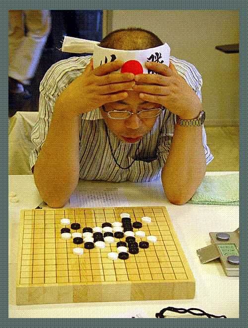

世锦赛吴镝二胜二负，位居中游
#1 世锦赛吴镝二胜二负，位居中游作者：有志青年 发表时间：2007-8-10 21:01:18

A组第四轮负于吴镝的日本棋手饭尾义弘
北京时间8月10日， 世锦赛A组比赛进行到第三轮。继之前的A组预选失利赛中相遇告负后，吴镝再度负于俄罗斯女棋手萨芙拉索娃·尤丽娅七段。尤丽娅流星开局，吴镝没有交换。之后吴走出了形同虚设的白10手，上海葛凌峰六段认为白10是超弱手，等于没防，黑简单就杀了。
如果说第一轮吴镝赢在了有研究、计算强，那么二三轮也是输在了对自己的研究与计算力的过于自信上。“过多的依赖研究,实战的时候就不会很用心的去算 ”葛帅一针见血的指出：“国内许多棋手都有这个毛病。”
上海顾炜认为：“作为一个高段棋手，同一个错误连犯两次，是不可原谅的。”北京殷立成认为：“A组的每个对手都是强敌，不能忽视 ，这种高水平的大赛，除了比技战术外，还要比稳定。”
井蛙现象不可有，夜郎之国难成大器。 当我们没有多少国际比赛机会时，认为中国棋手缺的是比赛机会，一有机会就会是天下无敌，吴镝二三轮的脆败让我们看到了和欧亚棋手的差距以及棋手自身存在的心理的，经验的问题。
也许有人会说我们输在了对欧洲棋手不了解，但同样，又有多少欧洲棋手熟悉中国棋手？日本棋手也不是经常有机会和欧洲棋手交流的。所以，我们说，A组吴镝的长处也是别人的长处。
在问到后面的比赛该怎么调整状态这个问题时，葛凌峰六段希望吴镝能尽量走得平稳些,开局别太冒险。国外棋手虽然不一定知道怎么必胜，但也会凭算力把棋走得很强,所以开那些优势局比较危险 。
就在这篇稿件即将发表之时，我们收到了吴镝在第四轮战胜饭尾义弘的快讯。目前吴镝二胜二负，位居中游。比赛共进行11轮单循环，希望在后面的比赛中，包括B组仇云飞在内的两位棋手珍惜这宝贵的国际大赛的机会，不负众望，展献中国棋手的精神风貌和棋力。（叶子）
#2 Re:世锦赛吴镝二胜二负，位居中游作者：九指禅魔 发表时间：2007-8-10 21:36:20
首届全国少年儿童锦标赛结束了...也该关心关心他们两个了...#3 Re:世锦赛吴镝二胜二负，位居中游作者：黄药师 发表时间：2007-8-11 14:14:41
晕，小日本就喜欢来“必胜”好像披麻带孝一样！
#4 Re:世锦赛吴镝二胜二负，位居中游作者：daiyue 发表时间：2007-8-11 14:39:41
这个人ms每次参加都戴着个的……